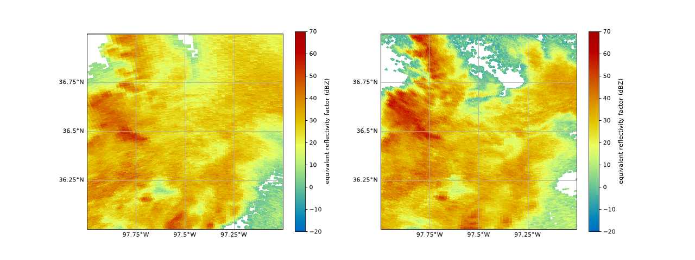
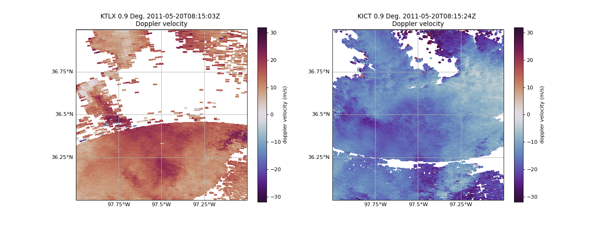

Reading in Radar Data in Native Radial Coordinates#
In this notebook, we will showcase how to read in two radar files using Py-ART and visualize them before utilizing them in PyDDA. By doing this we can see if there is convection as well as velocity values for dual doppler analysis.
import warnings
import cartopy.crs as ccrs
import matplotlib.pyplot as plt
import numpy as np
import pyart
import pydda
from pyart.testing import get_test_data
warnings.filterwarnings("ignore")
Read in the Data#
For this example, we use test data for two NEXRAD (WSR-88D) radars in northern Oklahoma: KTLX (Twin Lakes, OK) and KICT (Wichita, KS).
- Get test data::
https://arm-doe.github.io/pyart/API/generated/pyart.testing.get_test_data.html
- Reading CF-Radial::
https://arm-doe.github.io/pyart/API/generated/pyart.io.read_cfradial.html
# read in the data from both XSAPR radars
ktlx_file = pydda.tests.get_sample_file("cfrad.20110520_081431.542_to_20110520_081813.238_KTLX_SUR.nc")
kict_file = pydda.tests.get_sample_file("cfrad.20110520_081444.871_to_20110520_081914.520_KICT_SUR.nc")
radar_ktlx = pyart.io.read_cfradial(ktlx_file)
radar_kict = pyart.io.read_cfradial(kict_file)
Plot the data#
Let’s take a look at the reflectivity and velocity of these radars. We can then see their applicability to PyDDA.
- Py-ART’s plotting functionality display object::
https://arm-doe.github.io/pyart/API/generated/pyart.graph.RadarMapDisplay.html
- Plotting a PPI map::
Plot reflectivity of Both Radars#
fig = plt.figure(figsize=(16, 6))
ax = plt.subplot(121, projection=ccrs.PlateCarree())
# Plot KTLX
disp1 = pyart.graph.RadarMapDisplay(radar_ktlx)
disp1.plot_ppi_map(
"DBZ",
sweep=1,
ax=ax,
vmin=-20,
vmax=70,
min_lat=36,
max_lat=37,
min_lon=-98,
max_lon=-97,
lat_lines=np.arange(36, 37.25, 0.25),
lon_lines=np.arange(-98, -96.75, 0.25),
)
# Plot KICT
ax2 = plt.subplot(122, projection=ccrs.PlateCarree())
disp2 = pyart.graph.RadarMapDisplay(radar_kict)
disp2.plot_ppi_map(
"DBZ",
sweep=1,
ax=ax2,
vmin=-20,
vmax=70,
min_lat=36,
max_lat=37,
min_lon=-98,
max_lon=-97,
lat_lines=np.arange(36, 37.25, 0.25),
lon_lines=np.arange(-98, -96.75, 0.25),
)
(Source code, png, hires.png, pdf)
{kind=link}
{kind=link}

We can see convection on both radar images near each other with similar timestamps which will be perfect for PyDDA.
Plot Velocity of Both Radars#
fig = plt.figure(figsize=(16, 6))
ax = plt.subplot(121, projection=ccrs.PlateCarree())
# Plot the southwestern radar
disp1 = pyart.graph.RadarMapDisplay(radar_ktlx)
disp1.plot_ppi_map(
"VEL",
sweep=1,
ax=ax,
vmin=-32,
vmax=32,
min_lat=36,
max_lat=37,
min_lon=-98,
max_lon=-97,
lat_lines=np.arange(36, 37.25, 0.25),
lon_lines=np.arange(-98, -96.75, 0.25),
cmap='twilight_shifted'
)
# Plot the southeastern radar
ax2 = plt.subplot(122, projection=ccrs.PlateCarree())
disp2 = pyart.graph.RadarMapDisplay(radar_kict)
disp2.plot_ppi_map(
"VEL",
sweep=1,
ax=ax2,
vmin=-32,
vmax=32,
min_lat=36,
max_lat=37,
min_lon=-98,
max_lon=-97,
lat_lines=np.arange(36, 37.25, 0.25),
lon_lines=np.arange(-98, -96.75, 0.25),
cmap='twilight_shifted'
)
(Source code, png, hires.png, pdf)
{kind=link}
{kind=link}

As we can see, the Doppler velocities will need to be dealiased before using PyDDA, which will be shown in the next notebook.
Summary#
Utilizing Py-ART, we can read in two radar files within close proximity to each other. We are then able to visualize the data for both reflectivity and velocity moments to determine if these files can be utilized in PyDDA for dual doppler analysis. Upon further study of these example files, we determined that the velocities will need to be dealised, which will be shown in the next notebook.